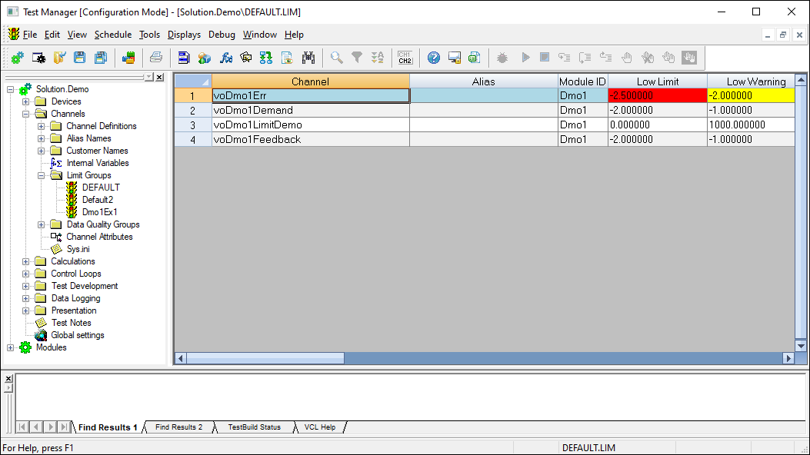
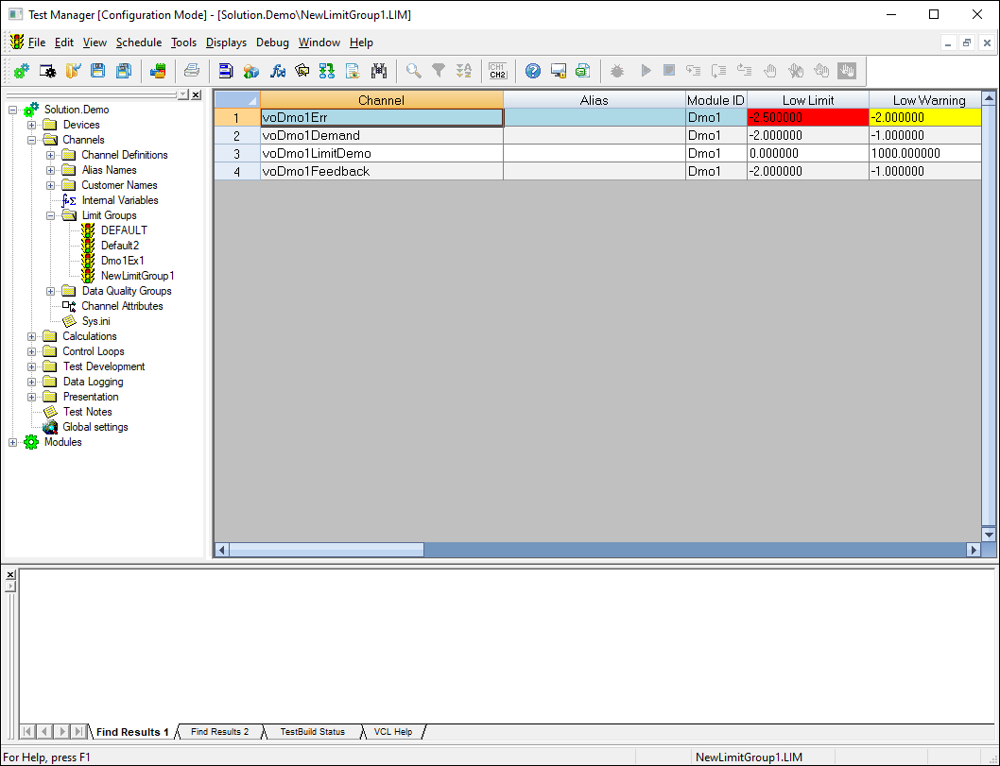

iTest User's Guide
Limit groups are used to change the high and low range for channels during different operating conditions for the test environment. For example, the default limits for a channel may be set in a wide range in order to catch abnormal operating conditions when the engine or speciment is not running. As a test proceeds, different limit groups may be applied to make that range smaller.
Limit groups can be managed in Test Manager or SolutionBuilder by using the Limit Groups editor. This document details how to manage limit groups in Test Manager. You can access this editor by selecting Channels > Limit Groups in the tree bar.
Limit Groups Editor

 |
NOTE: | Some features may not be available in the Limit Groups editor when using legacy limits. For more information, refer to the Legacy vs 3.2 Limits documentation. |
iTest includes a default limit group (i.e., DEFAULT.LIM) that lists all channels that have limits enabled. The DEFAULT.LIM limit group serves as the foundation for other limit groups and contains the default limit settings for each channel; the default limit settings are configured in the Channel Definitions editor. This limit group cannot be removed or renamed. Changes to the DEFAULT.LIM limit group will update the channel definition (FIL) file and will require iTest to be restarted.
When adding a new limit group, the channels listed in DEFAULT.LIM will be added to the new limit group. The maximum amount of limit groups for a solution is 50; once this maximum is met, limit groups cannot be duplicated nor added.
New Limit Group

Use the table below to configure channel limit settings in your limit groups.
|
NOTE: | Digital input/output channel limit settings can only be edited in the Channel Definitions editor. Fields (excluding the Low/High Limit Ignore Time, Low/High Limit Action, Delay Time, and Active fields) will be read-only in the Limit Groups editor for these channel types. |
Limit Groups Editor Descriptions
| Column | Description |
| Channel | (Read-only) The name of the channel. |
| Alias/Customer Name | (Read-only) The alias or customer name if defined for the channel. Use the Show Alias/Show Customer Name right-click option to display either the Alias or Customer Name columns. |
| Module ID | (Read-only) The module ID for the channel if applicable. |
| Low Limit | The lowest value at which the test specimen should run for the given channel. |
| Low Warning | The value at which a warning is issued, indicating that the channel value is approaching its low limit. |
| High Warning | The value at which a warning is issued, indicating that the channel value is approaching its high limit. |
| High Limit | The highest value at which the test specimen should run for the given channel. |
| LL Ignore Time | The amount of time that iTest waits after the channel value goes below its Low Limit/Low Warning value before starting the specified limit action. This column is also referred to as the Low Limit Ignore Time. |
| LW Ignore Time* | The amount of time that iTest waits after the channel value goes below its Low Warning value before starting the specified limit action. A blank value indicates that the Low Limit Ignore Time will be used. The default value is 0. |
| HW Ignore Time* | The amount of time that iTest waits after the channel value goes below its High Warning value before starting the specified limit action. A blank value indicates that the High Limit Ignore Time will be used. The default value is 0. |
| HL Ignore Time | The amount of time that iTest waits after the channel value exceeds the High Limit/High Warning value before starting the specified limit action. The default value is 0. |
| Low Limit Action | The action iTest performs when the associated low warning limit is met. |
| Low Warning Action | The action iTest performs when the associated low warning limit is met. |
| High Warning Action | The action iTest performs when the associated high warning limit is met. |
| Active | The state for the channel in the limit group. Possible states are Active or Inactive. If Inactive is selected, then limits are not checked for that channel when the limit group is enabled. |
| Delay Time** | The time (in seconds) to wait before checking limits on that channel. For example, you can put a 10 second delay on checking oil pressure after applying the running limit group. The delay is honored each time a limit group is applied. |
LimitsVer >= 3.2.
The following right-click options are available in the editor:
Right-Click Options
| Option | Description |
| Tree Bar Options | |
|---|---|
| New LimitGroup* | Adds a new limit group to the list of limit groups. The new limit group will use the DEFAULT.LIM limit group as the foundation for the limit settings. |
| Properties...* | Launches the Limit Properties dialog, allowing you to determine if limits are active on startup. |
| Save | Saves the changes made to the limit group. |
| Duplicate... | Duplicates the selected limit group and renames it with an appended numeric. The duplicated limit group will contain the limit settings as specified in the limit group it was duplicated from. |
| Delete | Deletes the selected limit group. |
| Rename... | Allows you to rename the limit group. Each limit group must have a unique name. |
| Print... | Prints a copy of the limit group. The Print dialog is displayed, allowing you to specify the printer, pages, etc. |
| Editor Options | |
| Insert Before | Launches the Channel Selection dialog, allowing you to select a channel to add to the limit group. The channel will be added before the highlighted row. |
| Add to end | Launches the Channel Selection dialog, allowing you to select a channel to add to the limit group. The channel will be added to the end of the list. |
| Show Alias/Show Customer Name | Displays either the Alias or Customer Name column, allowing you to view the channel's alias or customer name if defined for the channel. |